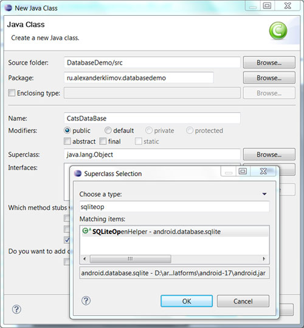

/* Моя кошка замечательно разбирается в программировании. Стоит мне объяснить проблему ей - и все становится ясно. */
John Robbins, Debugging Applications, Microsoft Press, 2000

/* Моя кошка замечательно разбирается в программировании. Стоит мне объяснить проблему ей - и все становится ясно. */
John Robbins, Debugging Applications, Microsoft Press, 2000
Введение в базы данных SQLite
Создаём базу данных
Работаем с базой данных
Android использует для работы с базами данных известную библиотеку SQLite. SQLite зарекомендовала себя в качестве чрезвычайно надёжной системы баз данных, которая используется во многих бытовых электронных устройствах и программах, включая некоторые MP3-проигрыватели, iPhone, iPod Touch, Mozilla Firefox и др.
С помощью SQLite вы можете создавать для своего приложения независимые реляционные базы данных для хранения и управления сложными данными приложения. Android хранит базы данных в каталоге /data/data/<имявашегопакета>/databases на вашем устройстве (или эмуляторе). По умолчанию все базы данных приватные, доступ к ним могут получить только те приложения, которые их создали.
Те, кто имеет опыт работы со связкой PHP+MySQL, найдут много знакомых вещей и быстро разберутся с принципом работы. Для остальных постараюсь объяснить максимально доступно.
Прежде всего нужно запомнить, что в Android уже есть готовый класс SQLiteOpenHelper, от которого нужно наследоваться. Помните, мы в своих проектах всегда наследовались от Activity (extends Activity). Точно так же надо поступить и при работе с базой данных.
Создадим новый проект как обычно. Теперь нужно создать новый класс, который будет работать с базой данных - добавлять, выбирать, удалять и прочие операции. Создаеём новый класс и в диалоговом окне напротив текстового поля Superclass: нажимаем кнопку Browse.... Далее начинаем вводить первые символы класса, чтобы выбрать из списка нужный класс. Восьми символов оказалось вполне достаточно, чтобы в списке остался только один вариант. Нажимаем на кнопку OK для добавления класса в диалоговое окно и нажимаем на кнопку Finish, чтобы закончить с созданием класса.

Появится следующая заготовка:
package ru.alexanderklimov.databasedemo;
import android.database.sqlite.SQLiteDatabase;
import android.database.sqlite.SQLiteOpenHelper;
public class CatsDataBase extends SQLiteOpenHelper {
@Override
public void onCreate(SQLiteDatabase arg0) {
// TODO Auto-generated method stub
}
@Override
public void onUpgrade(SQLiteDatabase arg0, int arg1, int arg2) {
// TODO Auto-generated method stub
}
}
Как видите, у класса есть два обязательных метода onCreate() и onUpgrade(), о которых поговорим позже.
Название класса будет подчёркнуто красной волнистой чертой, требуя создать конструктор. Вручную напишем конструктор перед методами, а также добавим пару констант:
// константы для конструктора
private static final String DATABASE_NAME = "cat_database.db";
private static final int DATABASE_VERSION = 1;
public CatsDataBase(Context context) {
// TODO Auto-generated constructor stub
super(context, DATABASE_NAME, null, DATABASE_VERSION);
}
Пора объяснить, что мы тут нагородили. Как вы уже догадались, константа DATABASE_NAME отвечает за имя файла, в котором будет храниться база данных приложения.
Вторая константа DATABASE_VERSION требует дополнительных объяснений. Она отвечает за номер версии базы. Принцип её работы схож с номером версий самого приложения. Когда мы видим, что вышла новая версия Chrome 23, то понимаем, что пора обновляться. Аналогично поступает и само приложение, когда замечает, что номер версии базы стал другим. Как только программа заметила обновление номера базы, она запускает метод onUpgrade(), который у нас сформировался автоматически. В этом методе необходимо разместить код, который должен сработать при обновлении базы.
Теперь нужно объяснить, зачем нужен этот метод onUpgrade(). Представьте ситуацию, что вы первоначально создали в базе таблицу, в которую заносятся имена котов и их электронные адреса и телефоны (о_О). Вроде всё замечательно. Если нужно поздравить усатых-полосатых с Международным днём кошек, который отмечается 1 марта, то проблем нет никаких. У вас есть список имён, по которому вы можете пройтись и лично написать каждому письмо. Пользователи, скачавшие ваше приложение, с удовольствием заполняют базу данных и дружно пишут письма мелким почерком. И вдруг до вас дошло, что совершили непростительную ошибку. Вы забыли добавить в базу данных даты рождения котов. А значит их никто не поздравит и не погладит (((.
Вы исправляете досадное упущение и выкладываете новую версию программы в открытый доступ. Новые пользователи, которые скачают программу первый раз, радуются жизни - у них есть все необходимые данные для работы. Но что делать тем, кто уже работает со старой программой? Обновившись, они увидят дополнительное текстовое поля для ввода даты рождения, но в старой базе нет колонки для приёма новых данных. И ваша программа завершится с ошибкой. Полностью удалять и устанавливать новую версию программы тоже не выход - тогда пропадут старые данные, что тоже не желательно. Для таких случаев вы пишете код в методе onUpgrade(), чтобы при обновлении поменялась структура базы данных у старых пользователей.
Метод onCreate() вопросов не вызывает - здесь создаётся сама база данных с необходимыми данными для работы.
Однако продолжим. Мы указали имя файла для базы данных и её номер. Также нужно указать имя таблицы и имена колонок для таблицы. Давайте для начала создадим совсем простую таблицу, которая будет содержать только имена котов.
public static final String UID = "_id";
public static final String CATNAME = "catname";
Я сказал только про имена котов, а в коде создал две константы (подлый обманщик). Первая константа - это просто идентификатор. Он будет настроен таким образом, что будет автоматически увеличиваться на единицу при каждом добавлении нового имени. Очень удобная штука, между прочим. Кстати, обратите внимание, что в имени идентификатора используется символ подчёркивания. Это не случайно. На самом деле, можно было и не использовать символ подчёркивания, так как сама база SQLite не накладывет никаких ограничений. Но разработчики Google решили немного повыпендриваться и рекомендовали использовать именно такой синтаксис, в противном случае у вас не будут работать запросы к базе данных, основанные на курсорах.
Практически всё готово. Так как описание команд SQL выходит за рамки статьи, то дальше галопом по европам. Для создания таблицы в SQL используется команда CREATE TABLE .... Для удобства вынесем команду в отдельную строку. Аналогично поступим с командой DROP TABLE. Сами команды помещаются в метод execSQL(). Полный листинг сейчас будет выглядеть следующим образом:
package ru.alexanderklimov.databasedemo;
import android.content.Context;
import android.database.sqlite.SQLiteDatabase;
import android.database.sqlite.SQLiteOpenHelper;
import android.util.Log;
public class CatsDataBase extends SQLiteOpenHelper {
private static final String DATABASE_NAME = "cat_database.db";
private static final int DATABASE_VERSION = 1;
public static final String TABLE_NAME = "contact_table";
public static final String UID = "_id";
public static final String CATNAME = "catname";
private static final String SQL_CREATE_ENTRIES = "CREATE TABLE "
+ TABLE_NAME + " (" + UID + " INTEGER PRIMARY KEY AUTOINCREMENT,"
+ CATNAME + " VARCHAR(255));";
private static final String SQL_DELETE_ENTRIES = "DROP TABLE IF EXISTS "
+ TABLE_NAME;
public CatsDataBase(Context context) {
// TODO Auto-generated constructor stub
super(context, DATABASE_NAME, null, DATABASE_VERSION);
}
@Override
public void onCreate(SQLiteDatabase db) {
// TODO Auto-generated method stub
db.execSQL(SQL_CREATE_ENTRIES);
}
@Override
public void onUpgrade(SQLiteDatabase db, int oldVersion, int newVersion) {
// TODO Auto-generated method stub
Log.w("LOG_TAG", "Обновление базы данных с версии " + oldVersion
+ " до версии " + newVersion + ", которое удалит все старые данные");
// Удаляем предыдущую таблицу при апгрейде
db.execSQL(SQL_DELETE_ENTRIES);
// Создаём новый экземпляр таблицы
onCreate(db);
}
}
На всякий случай расскажу ещё об одной хитрости. Вам понравится. Помните, я вам рассказывал про идентификатор _id? Разработчики в Google (те самые, которые выпендривались) решили, что данный идентификатор используется всегда, поэтому не нужно заставлять программиста вручную создавать данный идентификатор. Нужно сделать небольшое изменение в коде. После слов extends SQLiteOpenHelper добавьте ещё implements BaseColumns. Теперь у вашего класса есть встроенный идентификатор. Переменную UID можете спокойно удалять (я же говорил, что вам понадобится одна константа, а вы не верили), и заменить её присутствие в коде на ИмяКласса._ID, в нашем случае CatsDataBase._ID. Во многих примерах почему-то избегают данного подхода, но вдруг на собеседовании вас спросят. Правильный ответ гарантирует вам приём на работу (10% от первой зарплаты не забудьте мне перечислить).
Мы весь день потратили на создание какого-то глупого класса, а результата не видно. Хорошо, возвращаемся на главную активность и в методе onCreate() напишем пару строчек.
@Override
protected void onCreate(Bundle savedInstanceState) {
super.onCreate(savedInstanceState);
setContentView(R.layout.activity_main);
// Инициализируем наш класс-обёртку
CatsDataBase sqh = new CatsDataBase(this);
// База нам нужна для записи и чтения
SQLiteDatabase sqdb = sqh.getWritableDatabase();
// закрываем соединения с базой данных
sqdb.close();
sqh.close();
}
Запустите проект. На первый взгляд ничего не произошло, но на самом деле в каталоге /data/data/ru.alexanderklimov.ru.databasedemo/databases появился файл cat_database.db. Вы можете в этом сами убедиться, если в эмуляторе откроете перспективу DDMS на вкладке File Explorer и просмотрите структуру файлов.
Надеюсь, вы поняли как происходит подготовка и создание базы данных. Теперь нам нужно научиться добавлять и извлекать данные из базы данных. Существуют различные способы для данных операций. Мы попробуем их все понемножку.
Добавьте на экран главной активности кнопки и текстовые метки по вашему желанию. Не ограничивайте себя в фантазиях.
Первый способ вставки данных заключается в использовании класса ContentValues. Вот пример для кнопки, когда данные из текстового поля попадают в базу данных:
case R.id.buttonCVInsert:
// Метод 1: INSERT через класс CONTENTVALUE
ContentValues cv = new ContentValues();
cv.put(CatsDataBase.CATNAME, txtData.getText().toString());
// вызываем метод вставки
sqdb.insert(CatsDataBase.TABLE_NAME, CatsDataBase.CATNAME, cv);
txtData.setText("");
break;
Способ очень удобен, требует мало кода и легко читаем. Вы создаёте экземпляр класса, а затем с помощью метода put() записываете в нужную колонку нужные данные. После чего вызывается метод insert(), который помещает подготовленные данные в таблицу.
Если колонок несколько, то вызывайте метод put() несколько раз:
values.put(CatsDataBase.CATNAME, txtData.getText().toString());
values.put(CatsDataBase.EMAIL, txtEmail.getText().toString());
values.put(CatsDataBase.PHONE, txtPhone.getText().toString());
У метода insert() три аргумента. В первом указывается имя таблицы, в которую будет вноситься записи. В третьем указывается объект ContentValues, созданный ранее. Второй аргумент используется для указания колонки. SQL не позволяет вставлять пустую запись, и если будет использоваться пустой ContentValue, то укажите во втором аргументе null во избежание ошибки.
Второй способ использует традиционный SQL-запрос INSERT INTO.... Вы формируете обычный запрос в виде строки, а затем передаёте её в метод execSQL(). Основное неудобство при этом способе - не запутаться в кавычках. Если что-то не вставляется, то смотрите логи сообщений.
case R.id.buttonSQLQuery:
// Метод 2: INSERT через SQL-запрос
String insertQuery = "INSERT INTO " +
CatsDataBase.TABLE_NAME +
" (" + CatsDataBase.CATNAME + ") VALUES ('" + txtData.getText().toString() + "')";
sqdb.execSQL(insertQuery);
txtData.setText("");
break;
Меня терзают смутные сомнения, что данные попали в базу данных, когда я нажимал на кнопки. Вас тоже? Давайте проверим. Добавим на экран ещё кнопки для извлечения данных.
Считывать данные также можно двумя способами. В любом случае результат возвращается в виде объекта Cursor. Не путайте его с курсором мыши, который бегает у вас на экране.

У метода query() множество параметров. В первом параметре укажите имя таблицы, во втором - массив имён колонок, далее идут дополнительные условия. Пока везде оставим null. Далее через цикл while извлекаем данные и помещаем в логи. Можете снова запустить проект и проверить, какие данные вы уже занесли в базу.
case R.id.buttonQuery:
Cursor cursor = sqdb.query(CatsDataBase.TABLE_NAME, new String[] {
CatsDataBase._ID, CatsDataBase.CATNAME },
null, // The columns for the WHERE clause
null, // The values for the WHERE clause
null, // don't group the rows
null, // don't filter by row groups
null // The sort order
);
while (cursor.moveToNext()) {
// GET COLUMN INDICES + VALUES OF THOSE COLUMNS
int id = cursor.getInt(cursor.getColumnIndex(CatsDataBase._ID));
String name = cursor.getString(cursor
.getColumnIndex(CatsDataBase.CATNAME));
Log.i("LOG_TAG", "ROW " + id + " HAS NAME " + name);
}
cursor.close();
break;
Второй способ использует сырой (raw) SQL-запрос. Сначала формируется строка запроса и скармливается методу rawQuery().
case R.id.buttonRawQuery:
// Метод 2: Сырой SQL-запрос
String query = "SELECT " + CatsDataBase._ID + ", "
+ CatsDataBase.CATNAME + " FROM " + CatsDataBase.TABLE_NAME;
Cursor cursor2 = sqdb.rawQuery(query, null);
while (cursor2.moveToNext()) {
int id = cursor2.getInt(cursor2
.getColumnIndex(CatsDataBase._ID));
String name = cursor2.getString(cursor2
.getColumnIndex(CatsDataBase.CATNAME));
Log.i("LOG_TAG", "ROW " + id + " HAS NAME " + name);
}
cursor2.close();
break;
Итак, мы научились создавать базу данных, заносить данные и считывать данные. Изучите пример досконально, чтобы всё улеглось в голове. На следующих примерах мы расширим свои знания.
Полный листинг активности:
package ru.alexanderklimov.databasedemo;
import android.os.Bundle;
import android.app.Activity;
import android.content.ContentValues;
import android.database.Cursor;
import android.database.sqlite.SQLiteDatabase;
import android.util.Log;
import android.view.Menu;
import android.view.View;
import android.widget.EditText;
public class MainActivity extends Activity {
CatsDataBase sqh;
SQLiteDatabase sqdb;
EditText txtData;
@Override
protected void onCreate(Bundle savedInstanceState) {
super.onCreate(savedInstanceState);
setContentView(R.layout.activity_main);
txtData = (EditText) findViewById(R.id.txtData);
// Инициализируем наш класс-обёртку
sqh = new CatsDataBase(this);
// База нам нужна для записи и чтения
sqdb = sqh.getWritableDatabase();
}
public void onClick(View v) {
switch (v.getId()) {
case R.id.buttonCVInsert:
// Метод 1: INSERT через класс CONTENTVALUE
ContentValues cv = new ContentValues();
cv.put(CatsDataBase.CATNAME, txtData.getText().toString());
// вызываем метод вставки
sqdb.insert(CatsDataBase.TABLE_NAME, CatsDataBase.CATNAME, cv);
txtData.setText("");
break;
case R.id.buttonSQLQuery:
// Метод 2: INSERT через SQL-запрос
String insertQuery = "INSERT INTO " + CatsDataBase.TABLE_NAME
+ " (" + CatsDataBase.CATNAME + ") VALUES ('"
+ txtData.getText().toString() + "')";
sqdb.execSQL(insertQuery);
txtData.setText("");
break;
case R.id.buttonQuery:
Cursor cursor = sqdb.query(CatsDataBase.TABLE_NAME, new String[] {
CatsDataBase._ID, CatsDataBase.CATNAME }, null, // The
// columns
// for the
// WHERE
// clause
null, // The values for the WHERE clause
null, // don't group the rows
null, // don't filter by row groups
null // The sort order
);
while (cursor.moveToNext()) {
// GET COLUMN INDICES + VALUES OF THOSE COLUMNS
int id = cursor.getInt(cursor.getColumnIndex(CatsDataBase._ID));
String name = cursor.getString(cursor
.getColumnIndex(CatsDataBase.CATNAME));
Log.i("LOG_TAG", "ROW " + id + " HAS NAME " + name);
}
cursor.close();
break;
case R.id.buttonRawQuery:
// Метод 2: Сырой SQL-запрос
String query = "SELECT " + CatsDataBase._ID + ", "
+ CatsDataBase.CATNAME + " FROM " + CatsDataBase.TABLE_NAME;
Cursor cursor2 = sqdb.rawQuery(query, null);
while (cursor2.moveToNext()) {
int id = cursor2.getInt(cursor2
.getColumnIndex(CatsDataBase._ID));
String name = cursor2.getString(cursor2
.getColumnIndex(CatsDataBase.CATNAME));
Log.i("LOG_TAG", "ROW " + id + " HAS NAME " + name);
}
cursor2.close();
break;
default:
break;
}
}
@Override
protected void onStop() {
// TODO Auto-generated method stub
super.onStop();
// закрываем соединения с базой данных
sqdb.close();
sqh.close();
}
@Override
public boolean onCreateOptionsMenu(Menu menu) {
// Inflate the menu; this adds items to the action bar if it is present.
getMenuInflater().inflate(R.menu.activity_main, menu);
return true;
}
}
Естественно, мы можем вывести данные не только в лог, но и в адаптеры для Spinner или ListView. Добавьте на экран компонент Spinner и код при извлечении данных от запроса:
...
labels = new ArrayList<String>();
while (cursor.moveToNext()) {
// GET COLUMN INDICES + VALUES OF THOSE COLUMNS
int id = cursor.getInt(cursor.getColumnIndex(CatsDataBase._ID));
String name = cursor.getString(cursor
.getColumnIndex(CatsDataBase.CATNAME));
Log.i("LOG_TAG", "ROW " + id + " HAS NAME " + name);
labels.add(name);
// Creating adapter for spinner
ArrayAdapter<String> dataAdapter = new ArrayAdapter<String>(this,
android.R.layout.simple_spinner_item, labels);
// Drop down layout style - list view with radio button
dataAdapter
.setDropDownViewResource(android.R.layout.simple_spinner_dropdown_item);
dataAdapter.notifyDataSetChanged();
// attaching data adapter to spinner
spinner.setAdapter(dataAdapter);
...
Мы разобрали простейший вариант базы данных с одной таблицей, состоящей из двух колонок: идентификатора и имён котов. В больших приложениях иногда используются несколько несколько таблиц, содержащих по пять, шесть, семь колонок. Причём, записи в одной таблице связаны с записями другой таблицы. О создании таких таблиц в следующий раз.